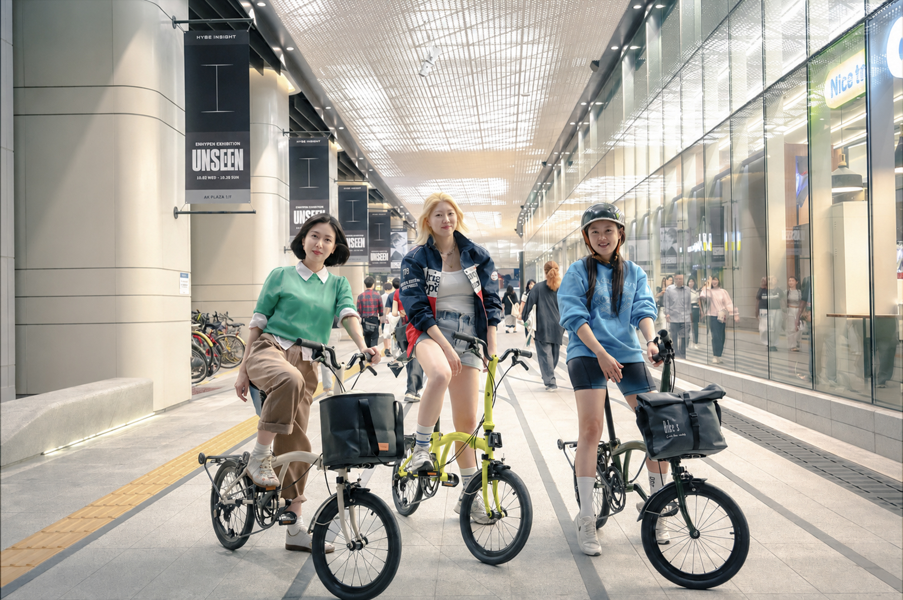
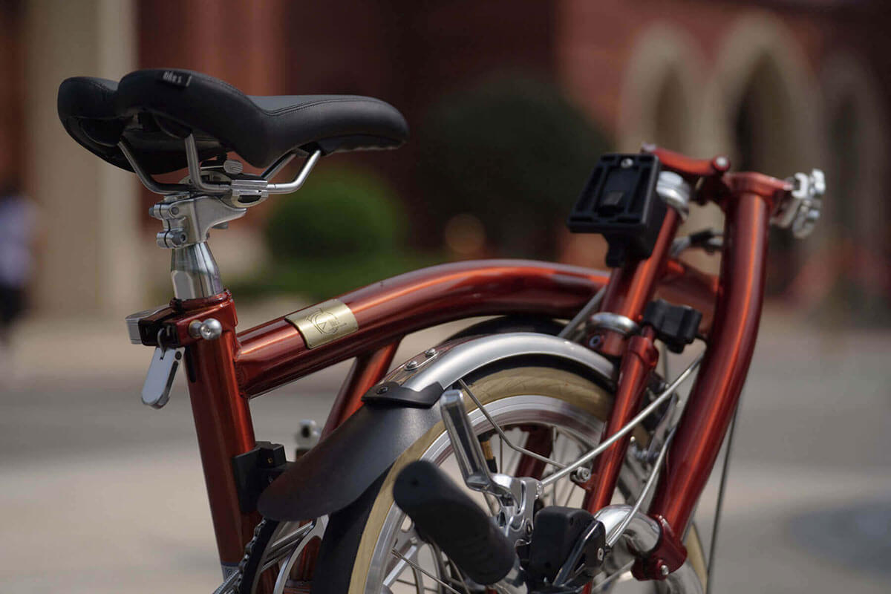
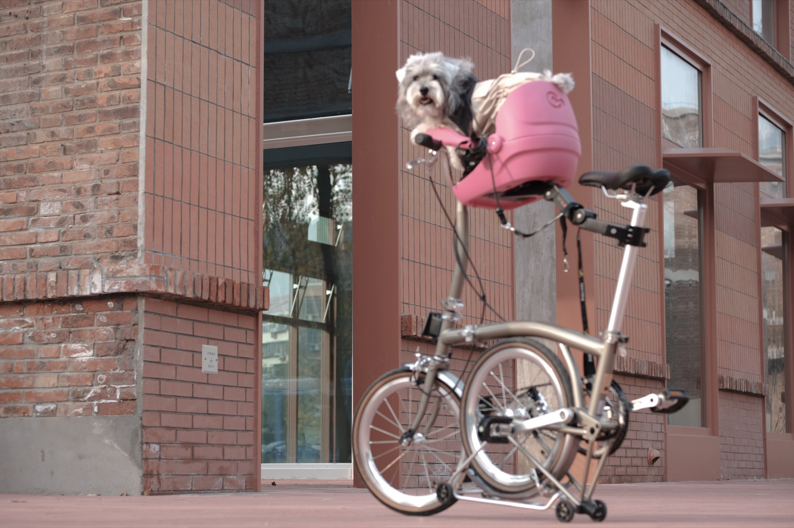
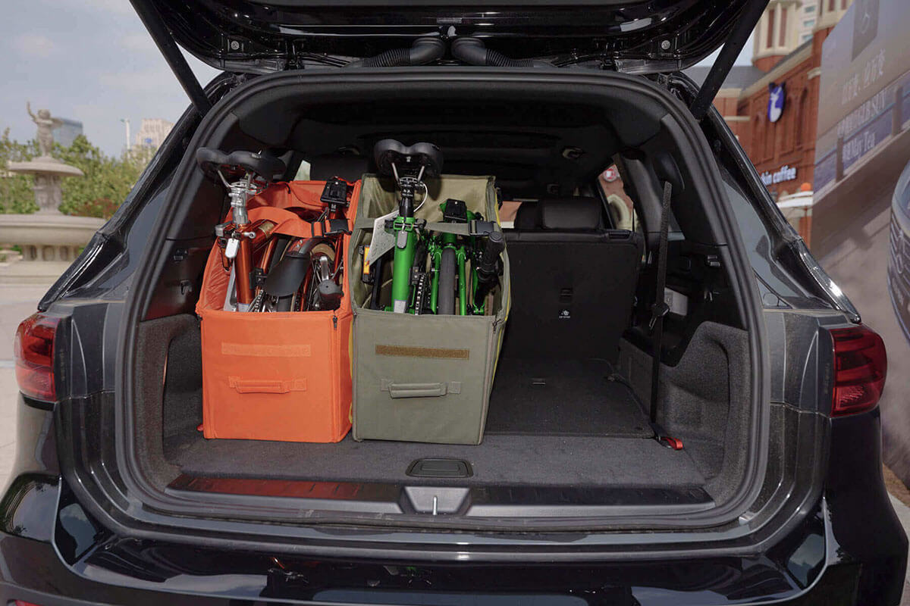
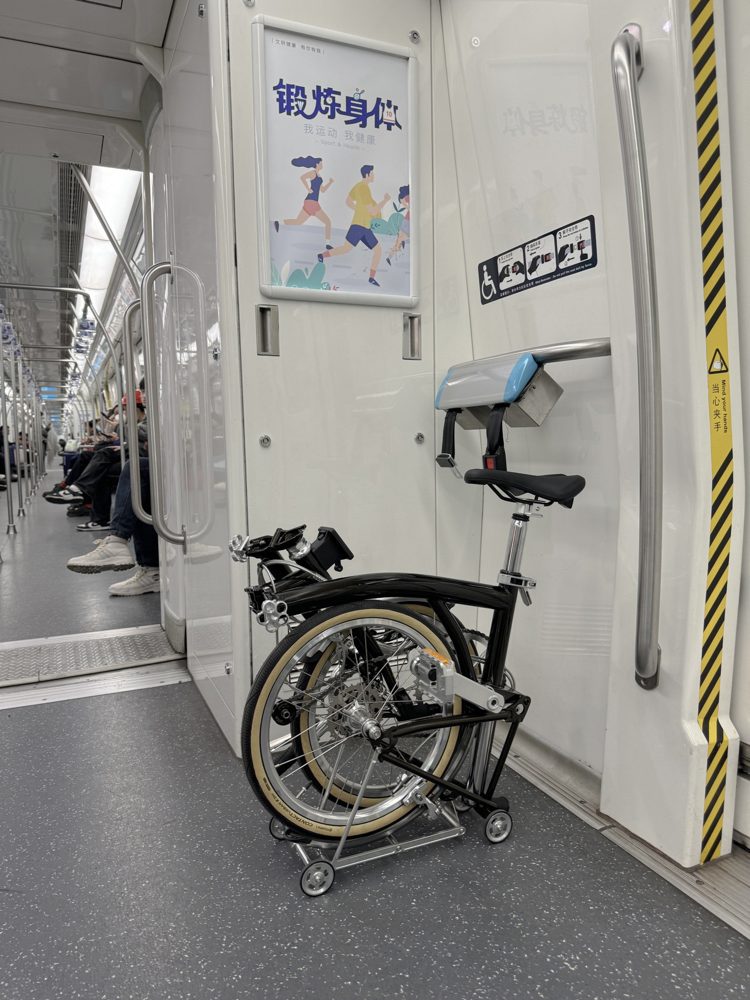
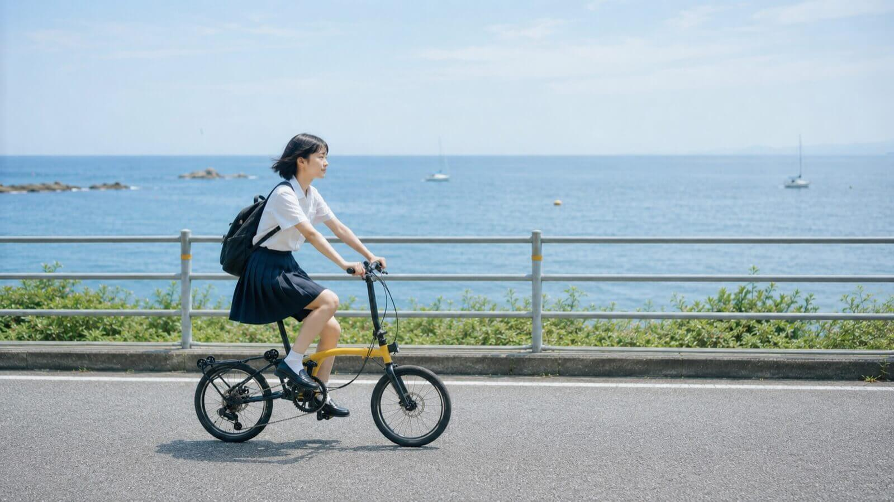

青春
日常の短距離移動から始めたい方は、16インチの青春を。6段変速を備え、BEKYの折りたたみ自転車を知るきっかけとなるモデルです。
仕様とカラーを見る
BEKY（佰客）の折りたたみ自転車が、街との距離をちょうどよくしてくれます。
16インチの青春、18インチのワイドタイヤモデルSKYLINE、14インチのNANO。日々の移動と収納場所に合う一台を。


毎日の走り方と収納場所を思い浮かべながら、ホイールサイズと変速段数を比べてみましょう。
日常の短距離移動から始めたい方は、16インチの青春を。6段変速を備え、BEKYの折りたたみ自転車を知るきっかけとなるモデルです。
仕様とカラーを見るワイドタイヤをお探しならSKYLINEを。18 × 2.125のタイヤと7段変速を備えた、3モデルの中でも異なる仕様の一台です。
仕様とカラーを見る折りたたんだときの収納スペースを重視する方は、14インチのNANOを。小径ホイールと4段変速が使い方に合うか、ご確認ください。
仕様とカラーを見るご購入前に、ご希望の仕様の重量・折りたたみサイズ・カラー・納期をご確認ください。階段での持ち運びや車載を予定している場合は、収納場所の寸法も確認しましょう。




折りたためば、静かな佇まい。ひらけば、いつもの景色へ連れていく鍵になる。

折りたたみ自転車の魅力は、どれだけ早く着くかではなく、「出かける」ことを呼吸のように自然にしてくれること。地下鉄に持ち込み、車のトランクに収め、お気に入りのカフェの窓辺にそっと止める。BEKYは、どの街角にも数えきれない物語が眠っていると考えています。私たちが届けたいのは、もう一度ドアを開けて外へ出たくなる、ひとつのきっかけです。
モデル、カラー、購入方法はBEKY公式LINEへお問い合わせください。
ご購入前に納期と受け取り方法をご確認ください。